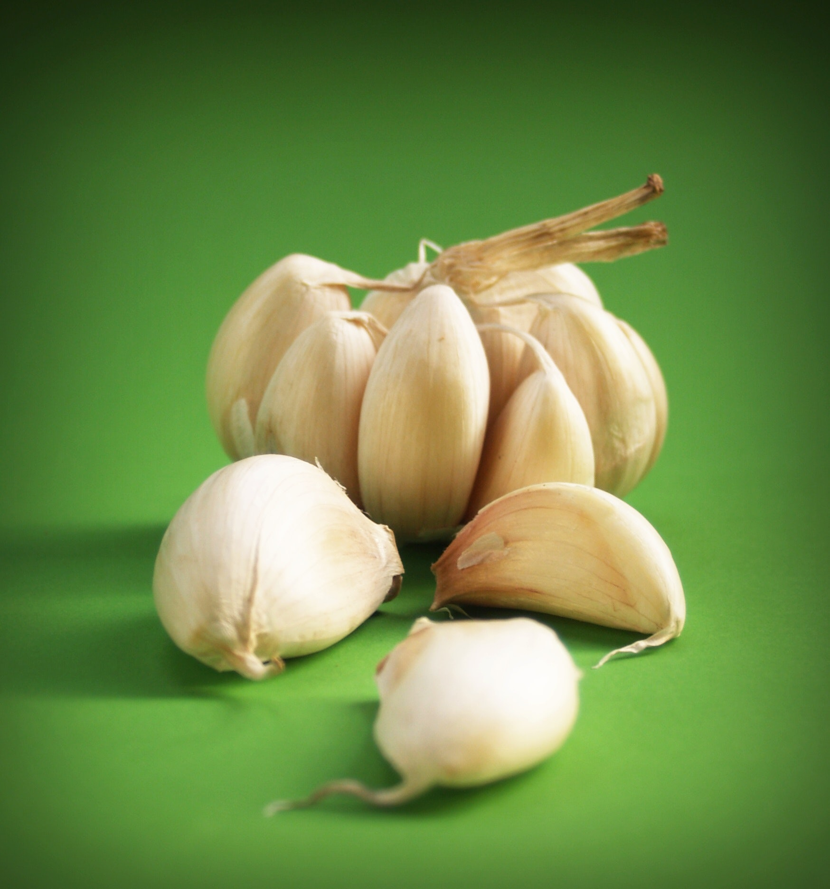
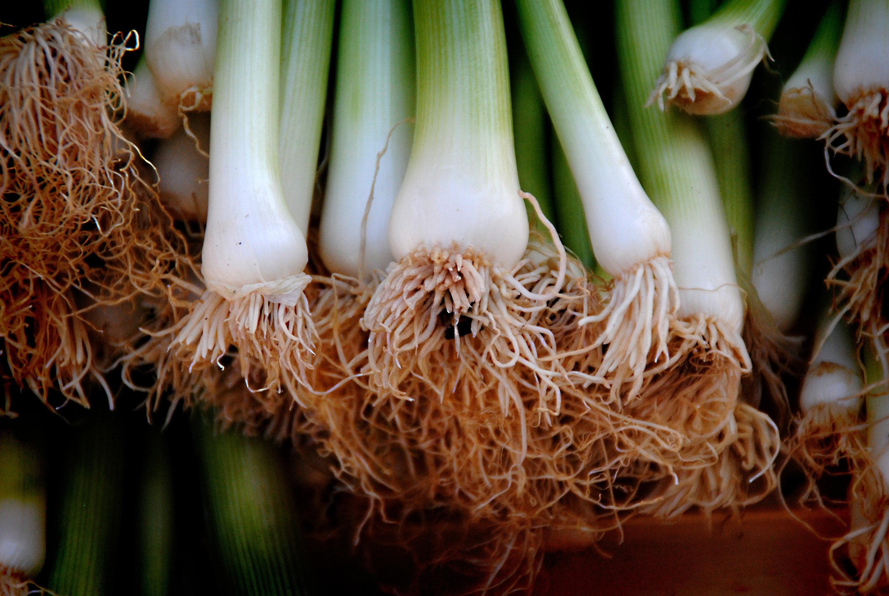
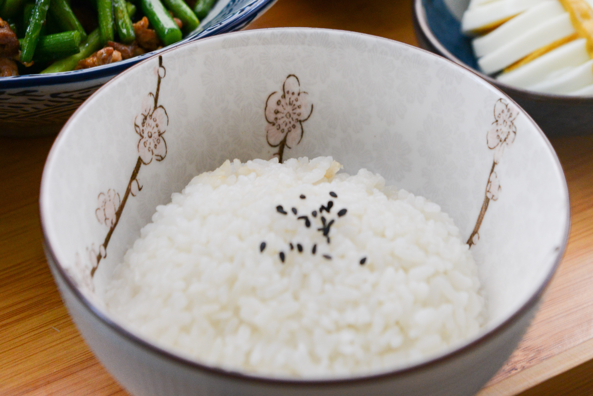
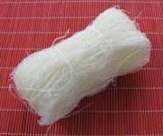

Chinese cuisine dates all the way back to the Zhou Dynasty(over 5,000 years ago), when it was recorded that China already grilled their foods. The food in China was mainly grains like, beans, millet, barley and brown rice. In the late Zhou Dynasty, people started to have white rice but that was on rare occasions and highly cost food for the rich class. Salt was a crucial element in their cooking during this period. In the Qin Dynasty, sour flavor was welcomed and favored. Cinnamon, green onion, and vinegar became common ingredients. Salty flavor became favored in the Han Dynasty, in this period was also when the Silk Road was opened. This brought new ingredients like pepper, grapes, walnuts, garlic, and sesame to China. The introduction of Buddhism resulted in vegetarian dish having an impact on people’s daily life. The Song and Yuan, Ming, Qing Dynasties created the schools of Chinese cuisine to form, this was influenced by different ethnic beliefs and ingredients. Today, Chinese cuisine is very famous in the world for its aroma, color, and well design.
| Ingredient | Use | Picture |
|---|---|---|
| Garlic | -Most common used in stir-fries- |  |
| Green Onions | -Used cooked to add flavor or raw as a garnish- |  |
| Rice | -Served with every meal, used in fried rice or by itself- |  |
| Rice Noodles | -Used in soups, salads, stir-fries and spring rolls- |  |